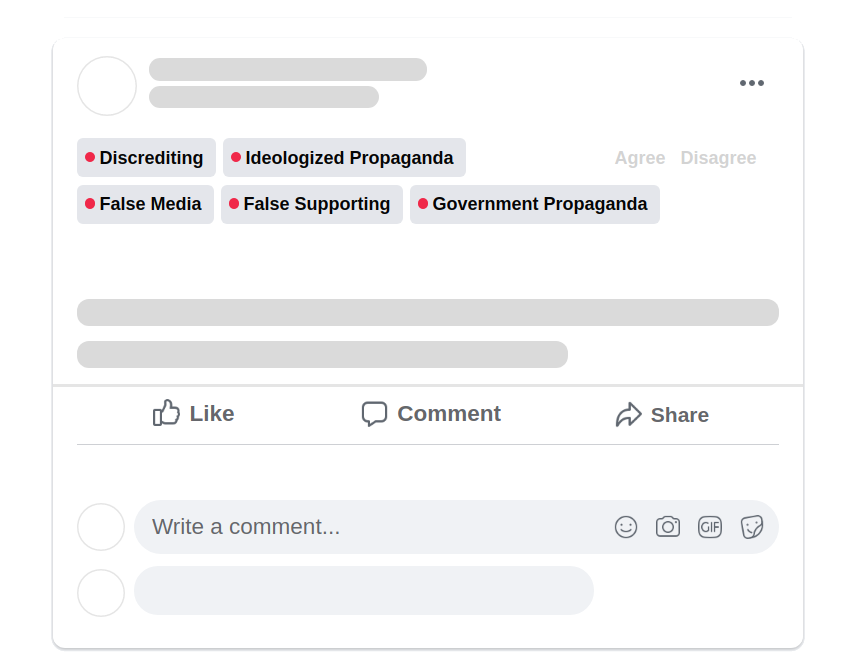

What's Purify?
Purify allows to spot and highlight the posts on social media that falls into one of the pre defined categories:
Discrediting
, False Media
, False Supporting
or Propaganda
.
The detailed information about facebook fact-checking policy can be viewed at link.
Goal
Goal of the project is to protect online comunity from manipulated content and create an additional obsticle agains dissinformation campigs.
Developement
The application was developed during the hackathon - Hacking the Fake News, organized by Digital Communication Network, Myth Detector, ForSet, and Media Development Foundation.
How it Works?
Model
Model is the a collection of interconnected the desission gates that is able to classify the text between two categories.
In order to learn how to distinguish the sentences model is trained using the examples of pre labeled sentences, that were categoriesed by researchers working at fact-checking organisations.
The model is based on ELECTRA architeqture, the final version of fine-tunned medel can be accessed here
The model is based on ELECTRA architeqture, the final version of fine-tunned medel can be accessed here
Data
To fine-tune the model 15 000 positive and 92 000 negative posts had been collected from fact-checking
organizations operating across the Georgia:
factcheck.ge
disinfoobserver.ge
mythdetector.ge
mediachecker.ge
Browser Extension
The browser extension reads the facebook feed and chek weather posts, fall into pre-defined categories. If the model's prediction is positive, the tag appears abowe the post, highlighting the predicted category.
Your Feedback
Your feedback would be highly appriciated, as it would further increase the accuracy of the model.In case you agree with the prediction of a model, you can press feedback > agree buton, on the right side, of the prediction, and press dissagree in case you think the predictions are not accurate.
The model is constantly been retrained using data collected throught your feedback.